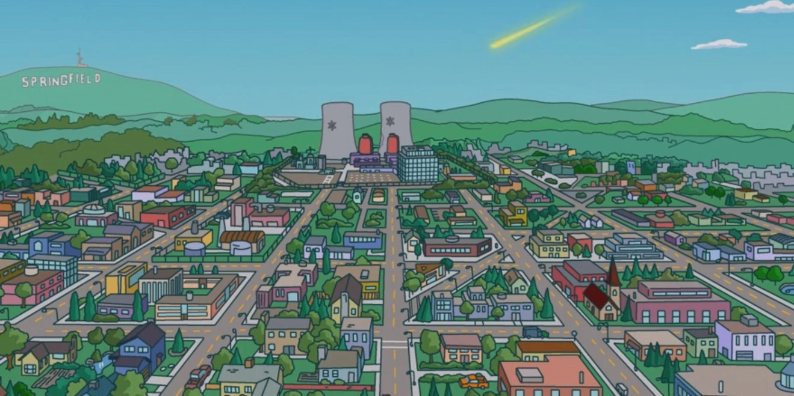

Springfield on kuvitteellinen Yhdysvaltain kaupunki, johon piirrossarjan Simpsonit tapahtumat sijoittuvat ja jossa Simpsonin perhe asuu.
Kaupunki tunnetaan vakavista ympäristö- ja saasteongelmistaan, korruptoituneista ja epäpätevistä viranomaisistaan sekä hyvin lyhytnäköisistä asukkaistaan, joilla kuitenkin on toisinaan vahva yhteishenki.